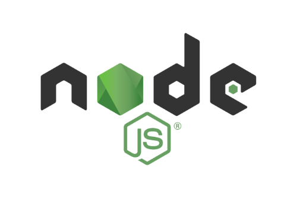

Node Version Manager (NVM) is a great tool under MIT licence
for easy install and management of Node.js versions. Due to the fact that the version of Node.
js you may need for a project is not the latest or nor the same as another project, you may want
to use NVM to install and manage versions of Node.js to overcome some cumbersome manual steps
you would need to do without it.
There are different ways to install NVM. It can be installed in a containerized environment or directly on your local machine. Choose your preferred method from the official NVM repository and install it accordingly.

Once NVM is installed you can install one or more versions of Node.js. Read the usage section
in the official NVM repository
to learn how to install a specific version of Node.js.
In short these are the steps to install a new version of node.js:
First check for the LTS versions available to install from remote. We want a long term support
(LTS) version because it is more stable and has a longer support period then other versions of
Node.js.
nvm ls-remote --lts
If you need to know the latest version of each LTS release, you can check the latest LTS release
list in at the bottom of the output of the nvm list command. When you have one of the latest LTS
releases installed, you can see the version number it in the list. For each of the latest LTS
releases that have not been installed yet, they will be marked (-> N/A) for not available.
Now when you know which version you want to install you can run the following command to install it.
nvm install <node.js version>
After you have installed a version of Node.js that you like to use you can activate it by running
the nvm use command in your terminal.
Check to see that the version you selected and installed is indeed installed on you system. The version you just installed should be listed among the version numbers in the list at the top before all the aliases and LTS releases.
nvm list
Now you can activate the version you want to use by running the nvm use command.
nvm use <node.js version>
To check that the version is activated you can use the nvm current command
nvm current
If you want to set the version you just activated as the default version to use, you can run the following command.
nvm alias default <node.js version>
In case you work on sevral projects using different versions of Node.js, you can create a alias for each version you use. This way you can easily switch between the versions you use for different projects.
Another way to manage the versions you use is to create a .nvmrc file
in the root of your project. This file should contain the version number of the Node.js version
you want to use for that project. When you navigate to the project folder in your terminal, NVM
will automatically activate the version of Node.js you specified in the .nvmrc file. There is
a caveat to this approach, your terminal needs to be POSTIX compliant.
To create a .nvmrc file you simply add the --save flag to the nvm use command when
activating the version of Node.js you want to use for the project.
nvm use <node.js version> --save
If you want to install the latest version of NPM you can run the following command.
nvm install-latest-npm
Node version manager is capable of many nice features when it comes to Node.js and its
surrounding ecosystem. As an example it is also able to upgrade the version of NPM you have
installed globally. Be sure to checkout the help command for more information on how to use the
nvm command or simply RTFM.
nvm help